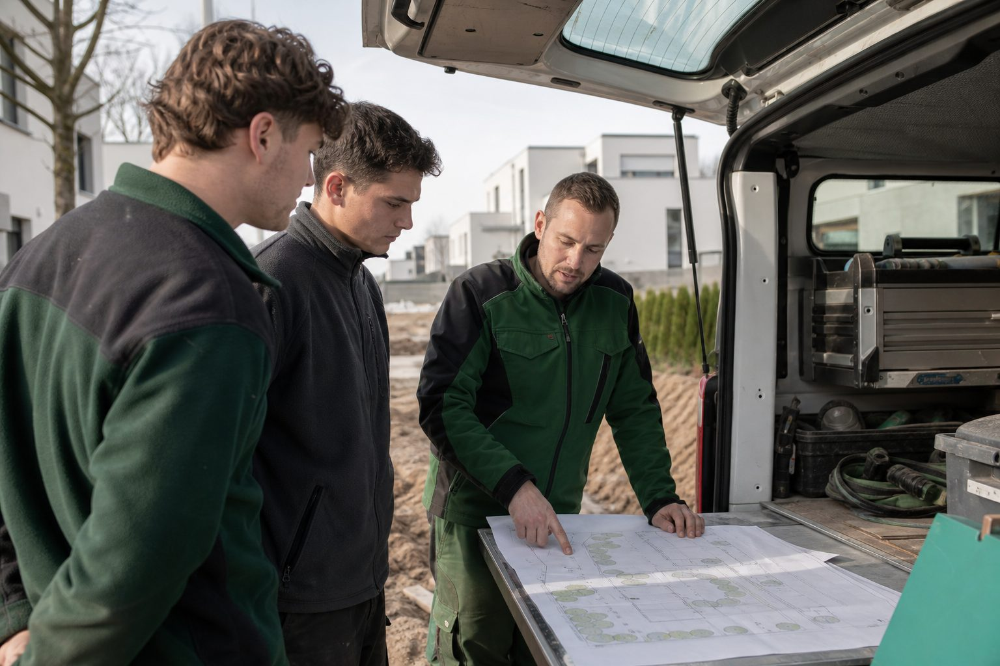

Vom Landschaftsgärtner zum Bauleiter: Drei Wege, ein Ziel
Bauleiter sind laut Trendbarometer der Messe die knappste Position im GaLaBau. Meister, Techniker oder Studium – welcher Weg zu wem passt, was er kostet und wie das Aufstiegs-BAföG hilft.

- Bauleiter werden nicht ausgebildet, sie wachsen aus Landschaftsgärtnern – drei Wege: Meister, Techniker, Studium.
- Meister: ein Jahr Vollzeit oder zwei bis drei Jahre berufsbegleitend; Techniker: zwei Jahre Fachschule mit Hochschulzugang; Bachelor: sechs bis sieben Semester, auch ohne Abitur möglich.
- Das Trendbarometer nennt Bauleiter als die Position, an der es europaweit am stärksten fehlt – wer intern entwickelt, hat sie.
Wer im Garten- und Landschaftsbau Bauleiter sucht, findet selten einen auf dem Markt. Das Trendbarometer der GaLaBau 2026 nennt Bauleiter und Projektverantwortliche als die Positionen, an denen es europaweit am stärksten fehlt. Die Erklärung ist einfach: Bauleiter werden nicht ausgebildet, sie wachsen – aus Landschaftsgärtnern, die Verantwortung übernehmen und sich weiterbilden. Drei Wege führen dorthin.
Weg 1: Der Meister
Die Fortbildung zum Gärtnermeister der Fachrichtung Garten- und Landschaftsbau ist der klassische Weg. Sie setzt eine abgeschlossene Ausbildung und in der Regel Berufspraxis voraus und vermittelt Fachtheorie, Betriebswirtschaft, Recht und Ausbildereignung. Angeboten wird sie in Vollzeit (meist ein Jahr) oder berufsbegleitend über zwei bis drei Jahre. Der Meister qualifiziert für Bauleitung, Ausbildung und Betriebsführung – und ist die Voraussetzung, um selbst einen Betrieb zu gründen und auszubilden.
Weg 2: Der Techniker
Der staatlich geprüfte Techniker für Garten- und Landschaftsbau ist die schulische Alternative: zwei Jahre Vollzeit an einer Fachschule, mit Schwerpunkt auf Planung, Kalkulation, Bautechnik und Baurecht. Techniker arbeiten häufig in größeren Betrieben in der Arbeitsvorbereitung, Kalkulation und Bauleitung. Der Abschluss berechtigt zudem zum Hochschulzugang.
Weg 3: Das Studium
Landschaftsbau und -management, Landschaftsarchitektur oder Bauingenieurwesen mit Vertiefung Freiraum – Bachelorstudiengänge an Hochschulen dauern sechs bis sieben Semester und führen in Planung, Projektleitung und größere Unternehmen. Für Landschaftsgärtner mit Gesellenbrief und Berufspraxis ist der Zugang auch ohne Abitur möglich; viele Hochschulen bieten duale oder berufsbegleitende Modelle.
| Dauer | Schwerpunkt | Typische Rolle danach | |
|---|---|---|---|
| Meister | 1 Jahr Vollzeit oder 2–3 Jahre berufsbegleitend | Praxis, Führung, Ausbildung, Betriebsführung | Bauleiter, Betriebsleiter, Ausbilder, Gründer |
| Techniker | 2 Jahre Vollzeit | Planung, Kalkulation, Bautechnik | Bauleiter, Kalkulator, Arbeitsvorbereitung |
| Studium | 3–3,5 Jahre | Planung, Projektleitung, Management | Projektleiter, Planer, größere Unternehmen |
Was es kostet – und wer zahlt
Meister- und Technikerfortbildungen werden über das Aufstiegs-BAföG gefördert. Die Lehrgangs- und Prüfungsgebühren werden bis zu einem Höchstbetrag bezuschusst, ein Teil als Zuschuss, der Rest als zinsgünstiges Darlehen, von dem bei bestandener Prüfung ein weiterer Teil erlassen wird; Vollzeitteilnehmer erhalten zusätzlich einen Beitrag zum Lebensunterhalt. Die aktuellen Sätze und Voraussetzungen stehen auf aufstiegs-bafoeg.de. Viele Betriebe beteiligen sich zusätzlich – mit Freistellung, Kostenübernahme oder einer Rückkehrvereinbarung.
Für Fachkräfte: die Frage vorher
Bevor der Weg beginnt, lohnt ein Gespräch mit dem Betrieb: Gibt es die Position, auf die die Fortbildung zielt? Betriebe, die Bauleiter suchen, sind in der Regel bereit, in Mitarbeiter zu investieren, die bleiben. Wer den Weg ohne Betrieb geht, hat nach dem Abschluss die Wahl – und in einem Markt, in dem Bauleiter fehlen, ist das keine schlechte Position.
Quellen
- Messe Nürnberg: Trendbarometer der GaLaBau 2026 (Fachkräftemangel besonders bei Bauleitern und Projektverantwortlichen) – www.galabau-messe.com/de-de/presse/pressemitteilungen/2026/01/trendba...
- Bundesministerium für Bildung und Forschung: Aufstiegs-BAföG (AFBG) – Förderung von Meister- und Technikerfortbildungen – www.aufstiegs-bafoeg.de/
- IG BAU: Tarifabschluss Garten- und Landschaftsbau (Ecklohn 20,91 Euro ab 1. Juli 2026) – igbau.de/Garten-und-Landschaftsbau-Tarifabschluss-mehr-Geld-fuer-alle.html
Kommentare
Noch keine Kommentare. Schreiben Sie den ersten.

Meister werden im GaLaBau: Weg, Prüfung, Kosten – und was das Aufstiegs-BAföG davon übernimmt
Der Gärtnermeister ist der klassische Aufstieg vom Facharbeiter zur Führungskraft. Wie die Vorbereitung organisiert ist, was die Prüfung verlangt und warum der Staat die Hälfte der Lehrgangskosten trägt.

Was der GaLaBau zahlt: Lohngruppen, Gehaltsgruppen und Ausbildungsvergütung 2025/26
Vom Helfer bis zum Baustellenleiter, von der Bürokraft bis zum Bauleiter: Der Tarifvertrag legt die Sätze fest, nach denen tarifgebundene Betriebe zahlen – und an denen sich der Rest der Branche orientiert. Die Übersicht mit der Erhöhung zum 1. Juli 2026.

Werkzeugkasten für Bauleiter: Sechs digitale Helfer, die den Tag kürzer machen
Aufmaß, Bautagebuch, Fotodokumentation, Zeiterfassung, Wetter, Material – für jede Aufgabe gibt es Apps. Welche Kategorien sich im Alltag von GaLaBau-Bauleitern bewähren, worauf es bei der Auswahl ankommt und warum weniger oft mehr ist.